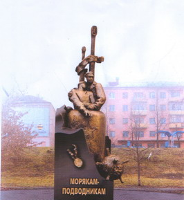
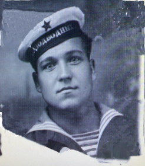

МАСТЕР ТОРПЕДНЫХ АТАК
В марте 2010 года в Твери откроют памятник нашим землякам, морякам - подводникам, погибшим в годы Великой Отечественной войны. Среди тех, чье имя увековечат на обелиске, будет старший военфельдшер подводной лодки Щ - 406 ВАСИЛЬЕВ Михаил Васильевич.
Согласно данным послужной карты офицера, Михаил Васильевич ВАСИЛЬЕВ родился 20 мая 1921 г. в д. Поросятниково Ильинского района Смоленской области (сейчас Западнодвинский район Тверской области). Русский. В период с сентября 1938 г. по июнь 1941 г. обучался в Военно-морском медицинском училище в Кронштадте. В июне 1941 г. назначен в распоряжение Военного совета Балтийского флота, 28 июля 1941 г. назначен старшим фельдшером на подводную лодку «Щ-406» БФ. Погиб 1 июня 1943 г. в составе экипажа лодки при выполнении боевого задания.
Награжден высшей наградой СССР - орденом Ленина (приказ командующего БФ от 15 июля 1942 г. №54), орденом Отечественной войны II ст. (приказ командующего БФ от 15 октября 1942 г. №87).
Из наградного листа к ордену Ленина: «Отлично обеспечил подготовку санитарной части к боевому походу. Умело организовал питание личного состава подлодки из имеемого запаса... В тяжелых условиях пребывания под водой, скученности предупредил возникновение заболеваний личного состава пл. Вернулись на базу все здоровыми. Полагаясь на свои знания и опыт, взял на себя ответственность вылечить бойца раненого накануне боевого похода осколком вражеской бомбы, которому требовалось стационарное лечение. Тем самым обеспечил полное наличие людей в БЧ-Ш, отсутствие которых могло сказаться на успехах лодки».
 24 мая 1943 г. пл «Щ-406» совместно с пл «С-12» в составе эскорта кораблей вышла из Кронштадта в Лавенсари с задачей форсировать Финский залив и действовать на коммуникациях противника в Балтийском море. Переход Кронштадт-Лавенсари был произведен успешно и без противодействия противника. В ночь с 28 на 29 мая 1943 г. «Щ-406» начала самостоятельное движение и вышла на позицию в район Данцигской бухты. В течение времени предусмотренного планом боевого похода, подводная лодка выходила и в базу не возвратилась. Существует несколько версий её гибели: потоплена 1 июня в районе Порккалан-Каллбода финскими силами противолодочной обороны, либо в тот же день атакована в районе Вайндло германским самолетом «Аг-196» и кораблями 24-й десантной флотилии; возможно, подорвалась на минных заграждениях противника. В двух боевых походах, совершенных в 1942 г., пл «Щ-406» потопила 2 транспорта: «Бенгт-Стуре» (872 брт), «Агнес» (2983 брт) и повредила парусно-моторную шхуну «Фидес» (545 брт). Весь экипаж подводной лодки за эти победы был награжден правительственными наградами.
В Кашинском районе Тверской области живет племянница Михаила Васильевича.
|